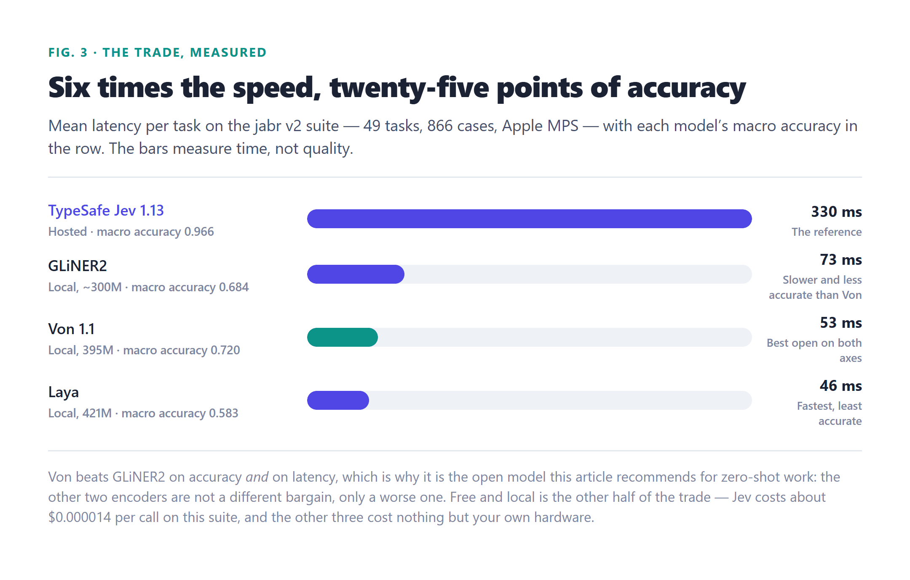

0
output tokens
On 15 September 2026 TypeSafe AI shipped Jev — a model that reads a block of state, answers typed questions with probabilities, and generates nothing. Within a week, seven open projects had rebuilt the idea. This is how the architecture works, how the KV cache is shared, how to host each one, how to use them inside agents, and what the numbers really say.
The case for a model whose job is a number, not a sentence.
Most of what software asks a model to do is small, repeated and boring: route this ticket, flag this message, rate this severity, does this clause permit a refund. None of those decisions ever needed prose. Shipping them to a frontier model meant paying for a paragraph you then parsed back into an if statement — and that shape is wrong three times over. It is slow, because generation is sequential. It is expensive, because you pay for output tokens you throw away. And it is unreliable, because a substring of free text has to be coaxed into a schema with a parser that can fail.
A System One model removes all three problems by refusing to generate at all. You hand it a block of state — a support ticket, a DOM, a game frame, a log line — plus a list of typed questions, and for each question you define the candidate answers. It returns a probability distribution over exactly those answers. There is no string to parse and no way for the model to return something outside your schema, because your schema is the output space.
TypeSafe co-founder Diogo Almeida calls it a “frontier-intelligence function call.” The description that stuck is simpler: a smart if statement. The name “System One” is borrowed from Kahneman's split between fast, intuitive judgement and slow, deliberate reasoning; the claim is that a pretrained transformer is at its best reading something and making a judgement in one step, so that is the part worth keeping.
Jev has exactly three primitives, and each maps cleanly onto code you already write:
Two consequences matter more than the primitive list. First, the labels live at request time, not in training: the options, their descriptions and the criteria all arrive with the call, so unlike a classic classifier the model was never trained on your specific categories and needs no training step on your side. Second, everything is a probability — even a Choice's chosen value is just the top of a distribution you also receive in full, which is what lets you set thresholds instead of trusting a single label.
The blunt version of the criticism is fair: this is a zero-shot classifier, and encoders have done that for years. What changed in September 2026 is not the idea but the packaging. Three things made decision models worth a dedicated architecture:
A closed, hosted service with an open interface — and the one number its clones cannot match.
Jev launched on 15 September 2026 and had a 100,000-person waitlist within a week. It is closed: no weights, no paper, no reward function, no training code. What is public is the interface, and it is that interface the open ecosystem copied.
The performance that got the attention: 70–500 ms per call, output tokens that cost nothing, and a latency profile that is flat in the number of questions and options (2 options 76 ms, 200 options 75.5 ms; 5,000 questions on a 22.8k-token state in 1.8 s) and linear only in the length of the state (~59 ms + 5.5 ms per 1k tokens). That signature — flat in questions, linear in state — is the entire architecture story in one observation, and Chapter 4 unpacks it.
TypeSafe trains Jev with something it calls RLCD — Reinforcement Learning for Calibrated Decisions. The name invites the wrong reading. On the Latent Space podcast Almeida pushed back on the idea that it names an algorithm, comparing it to “RLHF”: that term now names a task (instruction following), not the PPO algorithm from the original paper. RLCD names a north star the same way.
| Target | North star | Reward | Output |
|---|---|---|---|
| RLHF | Please humans | A preference model trained on rater comparisons | Free text |
| RLVR | Pass a verifier | A programmatic check: tests pass, answer matches | Free text, often long chains of thought |
| RLCD | Be reliable for programs | Agreement between stated probability and actual outcome | Typed values + a probability for every option |
A model is calibrated when, across everything it called 80% likely, about 80% actually happens. That is a property of groups of predictions, not of any single answer, and TypeSafe's own docs say so. The standard summary statistic is ECE (expected calibration error): bucket predictions by stated confidence and average the gap between confidence and observed accuracy. Zero is perfect.
The argument for why RLHF actively destroys this is the most interesting part. A model trained to emit long strings for a reward model faces a lopsided penalty: a visible error — a wrong fact stated plainly — is easy to catch and punished hard, while a subtle error that reads well is barely punished. The safest policy under that reward is to be hyperconfident: put nearly all the probability on the most typical answer and drop the alternatives. Almeida compares it to GANs, which learned to make sharp images by mode dropping. Chat models are the GAN in this analogy; that is why you cannot simply read the softmax of a chat model and call it a decision model.
RLVR does not help either, and the math is short. Suppose the true rate of an answer is q = 0.7 and the model reports p. A 0/1 reward on a sampled answer is a straight line in p, so its maximum is at p = 1.0 — it pushes toward certainty regardless of the truth. A log score peaks at p = 0.7, and so does the Brier score. Rewards with that property are called strictly proper scoring rules, and since RLCD's stated goal is probabilities that match outcome frequencies, some proper scoring rule is almost certainly at its core — the one thing the community broadly agrees on.
Open reproductions match Jev's accuracy and even its average calibration error on their own benchmarks. What they cannot yet match is confidence ordering — how well it ranks its right answers above its wrong ones. That ranking decides how much work you can safely automate at a given error budget, and temperature scaling cannot fix it, because re-scaling a ranking that is already wrong keeps it wrong. It is the honest reason to still reach for the hosted model, and it is measured in Chapter 11.
Nobody has Jev's weights. A black-box reconstruction converged on a design the clones now share.
TypeSafe has said only that it is “a new model architecture, a parallel sampler, and a training method we call RLCD.” Everything else comes from outside. The most-cited source is Archer Hume's September 2026 essay Jev's Architecture Unmasked, built on roughly 10,000 API probes, and it is worth pausing on how such a reconstruction is even possible: you can learn a great deal about a black box by varying one input at a time and measuring. Latency is the primary instrument.
| Probe | Result | What it implies |
|---|---|---|
| Plant a “secret code” in a sibling question vs in the state | Sibling P = 0.00 (5/5); state 0.90–0.92 | Questions cannot see each other; all of them see the state |
| Latency vs number of options | 2 options 76 ms, 200 options 75.5 ms | Options are read as a list, not decoded one at a time |
| Latency vs number of questions | 5,000 questions on a 22.8k-token state in 1.8 s | State computed once; branches batched |
| Latency vs state length | Linear: ~59 ms + 5.5 ms per 1k tokens | One prefill over the state |
| Add a junk option that itself scores 0.00 | Odds between real options still shift (10/10) | Options are read as a list, not scored independently |
| Reverse the option order | P(tech support) 0.84–0.89 → 0.93–0.96 | Order-sensitive: shuffle options when you calibrate thresholds |
What that converges on is not exotic. The base is almost certainly a pretrained causal transformer — the tokenizer's closest public match is the Qwen family, matching 348 of 415 probes — post-trained end to end for the decision interface. The novelty is not in the trunk; it is in the serving and readout design on top of it, which is exactly why a weekend was enough to copy the interface and why the quality (which lives in the data) was not.
Every model in this article implements some subset of the same six moves. This is the mental model to carry through the rest of the piece:
Prefill once, share the cells, read one position. This is the mechanism the whole family is built on.
In a normal transformer, every token you generate adds a row to the key/value cache: the model appends a token, attends over everything cached so far, and repeats — one sequential forward pass per output token. The cache grows as you talk, and the wall-clock time is set by the length of the answer. That is the cost structure decision models are designed to delete.
A System One model breaks it in three places, and it is worth understanding each because they explain almost every latency number in this article.

Because every question branches from the same state, and because questions cannot see each other's answers (the secret-code probe above — a code hidden in a sibling question is read at P = 0.00, while the same code in the state is read at 0.9), the state's K/V cells are computed a single time and reused by every question. This is why Jev's latency is flat in the number of questions and options and linear only in state length. You pay for the state once; everything after that is nearly free.
Each question is a short suffix appended logically after the state. In Rizzo Flow's description, the branches “share the state's KV cache cells instead of copying them,” and their texts run together in one unpadded micro-batch. The cost of N questions is therefore one prefill plus a handful of micro-batches, not N full passes. Rizzo Flow's own worked example: eight yes/no questions over a 218-token contract cost one prefill plus two micro-batches, 136 ms of inference in total, rather than eight separate passes. SemIf reports the same effect from the other direction — reusing one long state across many criteria lifted throughput from 2.33 to 20.03 decisions per second.
This is the part that makes the cache stop growing. Each candidate answer is one token, and the model reads the logits over the allowed answer letters at the last prompt position for that question. Softmax those logits and you have the distribution. Nothing is sampled, so there is no output token to append, so the cache does not grow while the model is “answering.” “Zero generated tokens” is not marketing — it is a statement about the compute graph.
Because the cache is sized by the state and not by the number of questions, adding questions is nearly free in memory; what costs memory is how long the state is. Rizzo Flow publishes the figure: on its 4B model the KV cache costs roughly 144 KiB per token, reserved at startup — about 1.4 GiB at the default 8,192-token limit and about 4.8 GiB at 32k. That is the real ceiling on how large a state you can afford, and it is why several projects cap the state and reject oversized inputs rather than silently truncating them.
Two practical corollaries fall out of this, and both come straight from TypeSafe's own usage advice:
Laya and Von sidestep the KV cache entirely by using a bidirectional encoder instead of a causal decoder. A bidirectional pass has no notion of “what comes next”, so there is no cache to grow and no decode loop to avoid — one non-causal forward pass produces everything. That is why they are the CPU-friendly end of this table: a 395M encoder like Von serves decisions from a CPU in under 15 ms with no GPU and no cache management. The trade is context length and world knowledge; the causal-decoder models read much longer, richer state.

Closed, hosted, and still the accuracy reference. The one to measure against, not to run.
| Backbone | Undisclosed; a pretrained causal transformer, Qwen-family tokenizer is the closest public match |
|---|---|
| Interface | Typed questions: Choice (up to 255 options), Score (ordered levels), Noul (yes/no) |
| Training | RLCD — a proper scoring rule over synthetic data |
| Latency / price | 70–500 ms per call; $0.042 per M input tokens; output free |
| Availability | Closed, hosted, waitlist |
| Independent score | 0.966 macro accuracy on the 49-task jabr benchmark |
Jev's place in this article is as the reference point. You cannot self-host it, you cannot read its weights, and you should treat its published numbers — and every clone's — as self-reported. But it is the model every other project benchmarks against, and it is the one whose interface the rest of them reproduce, so understanding its usage pattern is what lets you understand the clones.
The usage pattern is where Jev is genuinely opinionated. The advice is to decompose, then threshold: rather than asking “should I refuse here?”, ask a separate specific question for each situation where you would want to refuse, then combine the answers in code. Each question gets its own threshold, set from real labelled examples, and the threshold should scale with the cost of being wrong — above it code acts, below it the case goes to a human, a bigger model, or a request for more context. That turns prompt tuning back into ordinary software engineering: when the model misses a case, you add a question and a test case, and it stays fixed.
There is also one evaluation of Jev that is neither a vendor claim nor a community probe: a University of Bonn, Lamarr Institute and Fraunhofer IAIS group ran jev-1.13.0 zero-shot over 37 public datasets and 346,009 requests for under $10 of API spend, with Qwen3.8-27B and Gemma-4-E4B scored on identical requests as controls. Jev beat Qwen3.8-27B on 27 of the 37 datasets, reached 95–99% accuracy on IMDB, SST-2, HellaSwag and ARC, and 86.7% on Belebele across 122 languages. Its choice probabilities came out well calibrated and supported selective prediction — the first third-party confirmation of the property this whole category is sold on — with one caveat worth knowing: the binary probabilities rank well but sit poorly against a fixed 0.5 threshold, so a hardcoded cutoff on a Noul is the wrong way to read them. The losses cluster where the vendor's own weakness list says they do, on fine-grained, noisy and rubric-style labels. One result cuts the other way, though: Jev answered MMLU's calculation-heavy questions more accurately than the rest (94% vs 91%), where both open models found them harder, and the authors treat that as a possible sign of memorisation rather than as evidence of arithmetic skill.
Two ModernBERT backbones that answer from a CPU, and the star-count trap.
Laya is the flagship by attention: 31,100 GitHub stars read from the GitHub API on 6 October 2026, Apache-2.0, published on 18 September 2026 by Nandakishor M — the weights under the Convai Innovations organisation, the code repository under his own account — and the only one of the eight you install with a single pip install laya. Its 421M parameters sit on a ModernBERT-large backbone with a decision head on top, and a 322M multilingual checkpoint covers 100+ languages, with a router that picks between them by detecting the script in under a millisecond.
Its speed is the selling point: 39.5 ms per question on a Tesla T4, or 7.2 ms with ten batched. On an M3 Pro with no GPU acceleration, the README quickstart measured 66 ms median for all three questions in one pass. Version 0.3.7 cut checkpoint loading roughly tenfold and added laya-serve, a FastAPI server speaking the same POST /v1/systemone protocol as Jev.
Von sits at the other end of the attention-to-quality curve. It is a 395M non-autoregressive model on a ModernBERT-Large encoder (Apache-2.0), which — being an encoder — picks an option, judges a condition or rates a level in one bidirectional forward pass, serves from a CPU in under 15 ms, and ships Python and TypeScript clients as von-sdk on pip and npm behind a /v1/systemone server. On the independent benchmark it is the best open entrant at 0.720 — with 857 stars against Laya's 31,100, which is the clearest reminder in this whole article that stars measure attention, not accuracy.
Von's recorded failure mode is worth naming because it is representative of encoder-based decision models generally: it collapses to one mode on unfamiliar domains — given state it was not built for, it keeps returning the same answer. Encoder models have less world knowledge to fall back on than a 9B causal trunk, and that shows up as exactly this kind of collapse.
Qwen backbones, Jev's exact wire format, and the most careful evaluations of the group.
Kev is a family of rank-16 LoRA adapters plus a small pointer head on Qwen3.5 (and Qwen3.8) bases at 0.8B, 4B and 9B, from Jared Palmer, Apache-2.0 at 8,556 stars (GitHub API, 6 October 2026). Its crucial property is that it serves TypeSafe's own POST /v1/systemone contract, so the official SDK works against it after changing a base URL — code written for the hosted API points at localhost instead.
Kev publishes the most careful evaluation of the group, including where it loses: Kev-9B scores 0.822 on held-out new sources against Jev's 0.857, its confident-error rate is 4.0% against 3.7%, and the share of decisions you could automate at a 5% error budget is 0.45–0.57 against Jev's 0.70. Knowledge questions are the big gap — MMLU 0.74 against 0.90 — and that gap belongs to the base model, not the adapter.
Its data recipe is the part worth stealing. Kev builds examples as minimal pairs with labels computed by code: write the rule, generate the facts, compute the correct label, then render it as text — and for every example create a variant that changes one decisive fact so the label flips. It adds a third variant that removes the decisive fact entirely and trains toward a uniform distribution, which is what teaches a model not to be confident when the evidence is not there. The measured effect: of items that are genuinely unknowable, Kev-9B answered only 5% at ≥ 0.9 confidence, against 9% for Jev and 26% for an earlier Kev without those records.
Bespoke Labs' Nimble is explicitly a data, model and recipe rather than a product: “we did not distill from Jev. The point is to show how to curate data, how to train, and to serve such a model.” It applies LoRA to Qwen3.5-9B (rank 16, learning rate 5e-5, effective batch 8, one epoch, BF16) and was built in a day. The latest checkpoint takes an 8,192-token context and up to 255 choices per field.
Its serving section documents the KV behaviour in plain language: “Process the context and schema once (prefill the KV-cache), then obtain the scores for the tokens we care about.” Its ParallelScorer on MLX processes the shared context once and scores all fields in parallel; its CUDA scorer scores each field on its own with the full prompt each time. Because each field is scored separately, one field cannot see the answer to another.
The contribution is contrastive data curation: write two examples that are nearly identical, differing in one relevant fact (at most eight words changed in Nimble's recipe), where that difference changes the correct answer. From the pairs, the model learns which evidence should change its decision. On its 324-example held-out set, Bespoke-Nimble-9B matched 292 (90.12%) against Jev 1.13.0's 302 (93.21%) — 17 more than the untuned 27B it was compared against, and 10 fewer than Jev. The authors are blunt that the labels are synthetic and the test is narrow, from only six source families.
SemIf (formerly OpenJev) makes the purest argument: take a frozen open-weight model you already host, declare your options, and read their probabilities off the logits without sampling a single answer token. It trains nothing. On one RTX 3090 with a frozen Qwen3.5-4B, one state and 21 binary criteria, direct typed logits took 1.023 s with zero output tokens, while an autoregressive JSON array of the same 21 answers took 5.332 s and 111 output tokens — 5.21× longer. Reusing one long state across many criteria pushed throughput from 2.33 to 20.03 decisions per second.
On quality, its 4B baseline reaches 0.845 modal agreement with TypeSafe's published results against Jev's 0.883 on a 102-row aligned subset, and a quantized Qwen3.8-27B bridge hits 0.958 balanced accuracy on 144 authored decisions. It wants a GPU that holds a 4B model in BF16, but there is a llama.cpp CPU backend, MLX and MPS for Apple Silicon, and a WebGPU demo that runs in a browser tab. Its native context claim is the largest here: Qwen3.5-4B supports 262k tokens natively (about 1M with YaRN), though SemIf's default limit is 4,096.
One optimised for developer ergonomics and honest numbers; one built for the tightest loop of all.
Rizzo Flow is a local-first implementation of Jev's programming model — by its own statement it does not reproduce Jev's proprietary architecture or its RLCD training. It reproduces the interface with an open model and, since 25 September 2026, its own LoRA fine-tune for typed decisions. The default is Spark-X2.5-4B (Apache-2.0, from XHToken), with a 1.7B sibling; it runs on llama.cpp, so the hardware can be an Apple, NVIDIA, AMD or Intel GPU, or no GPU at all.
The KV story is documented better here than anywhere else. The state sits at the start of the prompt and is prefilled once; every question branches from it and the branches share the state's KV cache cells rather than copying them; the branch texts run in one unpadded micro-batch. The README even draws it:
state (text or JSON)
└─ prefill once → KV cache
├─ question 1 ─┐
├─ question 2 ─┤→ logits of the answer letters only (A, B, C …)
└─ question N ─┘ └─ softmax → typed JSONIt reserves the cache at startup at roughly 144 KiB per token on the 4B, and publishes benchmark numbers with their caveats attached — including a table that puts its own fine-tune below Jev in accuracy while beating it on probability shape. On the typed-decisions test split (400 cases, 2,000 decisions), the base Spark-X2.5-4B scored 0.574 accuracy with an ECE of 0.349; the Rizzo Flow fine-tune reached 0.648 with an ECE of 0.112, and the Q4_K_M quantisation tied Q8_0 at 0.650. Jev 1.13.0's card reports 0.727 with an ECE that is not given.
It also ships the two demos that make the latency concrete: a playground with probability bars and timings, and Snake, where every move is one POST /v1/decisions — 140 moves in 25.6 s, about 5.5 per second, roughly 150 ms per round trip and zero generated tokens. One caveat the author adds himself: with only the ASCII grid the 4B model died within 26 moves, because a 4B model does not read a grid spatially — the game had to hand it pre-computed sensors and leave only the choice to the model.
NanoJev is the outlier and the only project here with published evidence of beating Jev outright. It is a Qwen3-0.6B backbone with decision heads trained on four game environments, aimed squarely at the control-loop case behind TypeSafe's own Doom demo — a decision inside a frame budget.
On the held-out test set, one shared checkpoint scores 128/128 on ViZDoom Basic against Jev's 56/128, and 27/128 on the harder Predict Position task against Jev's 11/128. It solves a 50×50 maze in 225 attempts where Jev needs 2,738 — though Jev still wins that maze test set 7/10 to 4/10, and the two tie 8/8 on Snake.
Concrete paths for each model, plus the interface trick that makes migration a one-line change.
The single most useful fact for hosting any of these is that most of them speak TypeSafe's own POST /v1/systemone contract. Kev, Rizzo Flow, Von, Laya and SemIf all expose it, which means code written against the hosted API survives the move to localhost by changing a base URL — and a shadow-traffic migration becomes possible: point a copy of production at the local server, log what it would have decided, and compare it against what Jev actually returned.
| You have | Use | Models that fit |
|---|---|---|
| No GPU / laptop CPU | Encoder (ONNX/CPU) or llama.cpp CPU | Von (<15 ms), Laya (66 ms M3 Pro), SemIf (llama.cpp CPU) |
| Apple Silicon | MLX / Metal | Kev (47 ms), Nimble (ParallelScorer), Laya, Rizzo Flow |
| NVIDIA GPU | llama.cpp CUDA, or SGLang for scale | Rizzo Flow (tested on RTX 5060 Ti), Kev, Nimble (CudaScorer), SemIf |
| AMD / Intel GPU | Vulkan, ROCm/HIP or SYCL via llama.cpp | Rizzo Flow (Vulkan tested; ROCm/SYCL builds on request) |
The most self-contained quickstart in the group; nothing is compiled and no GPU toolkit is installed, because it downloads a prebuilt llama.cpp runtime for your machine.
git clone https://github.com/Rizzo-AI-Academy/rizzo-flow && cd rizzo-flow
uv sync --locked # four small Python packages, seconds
uv run rizzo download # llama.cpp runtime + Rizzo Flow 4B Q8_0 (~4.4 GB)
uv run rizzo serve # → http://127.0.0.1:8017/playgroundThen call it — the state goes in once, the questions come back as probabilities:
curl http://127.0.0.1:8017/v1/systemone \
-H 'Content-Type: application/json' \
-d '{"state": "Help! My payouts have been failing for 3 days.",
"model": "rizzo-latest",
"questions": {"is_urgent": {"type": "noul",
"instructions": "Does this convey urgency?"}}}'A 1.7B option (--size 1.7b, 1.8 GB) loads faster but loses accuracy; the Q4_K_M 4B at 2.6 GB is the better small choice. Set RIZZO_API_KEY before starting to require bearer auth, and note that the servers are open by default.
git clone https://github.com/jaredpalmer/kev.git && cd kev
uv sync --extra serve
KEV_DTYPE=bf16 uv run --extra serve python -m kev.serve --run jaredpalmer/kev-0.8b --port 8009The official TypeSafe SDK then points at http://localhost:8009. Set KEV_API_KEY before exposing the port.
Nimble needs a one-time merge step because its MLX runner cannot load a LoRA adapter folder directly (and does not support quantised weights). Unquantised, the 9B weights alone are about 18 GB, and the merge needs extra RAM and disk on top.
python3.12 -m venv .cache/venvs/nimble && source .cache/venvs/nimble/bin/activate
python -m pip install torch==2.8.0 -r requirements/training.txt
# download + merge the adapter once, then:
python -c "from nimble.scoring.parallel_scorer import ParallelScorer; ..." # MLX pathpip install laya # then: laya-serve (FastAPI on /v1/systemone)pip install von-sdk # or: npm i von-sdkIf you already serve Qwen3.5-4B, SemIf adds no weights to download; it is a baseline that reads typed option probabilities straight from that model's logits. CPU, MLX/MPS and a browser WebGPU demo are all supported.
Where a decision model belongs in a harness — and the four families people actually shipped.
Decision models do not replace an agent's reasoning model. They replace the small, repeated, boring calls that sit around it, and this is where they earn their keep. TypeSafe sorts reported use into four families, and the community added a fifth within days:
| Family | What it looks like | Reported example |
|---|---|---|
| Dark data | Classify or tag piles nobody could afford to run an LLM over | 500 emails for 3.5 cents; SEO internal linking across 586 pages for $0.21 |
| Coding agents | Routing, skill selection, guardrails inside a harness | A model router; shell-command risk checks (“irreversible” at low confidence → ask a human) |
| Real-time | A decision inside the loop, under a latency budget | Browser agent booking flights in 7 s for $0.0039; Doom at about 10 calls/s |
| Verify everything | Cheap typed checks on another model's output | PR review with 14 typed checks at $0.00007 per PR |
| Smart software | The model as a programming primitive | Voice-controlled computer use; language features as decision calls |
Almost every agent use reduces to one of these, and each maps to a specific mechanism in the architecture:
Every project wins on its own benchmark. The useful number comes from somewhere else.
This is the chapter that decides whether you adopt one of these. The trap is obvious once stated: every project benchmarks itself against Jev on a suite it chose, and every one wins on its own suite. Vendor numbers here are hypotheses, not results, and the same caution applies to TypeSafe's figures.
The number to remember comes from elsewhere: the jabr classifier benchmark, running 49 tasks and 866 cases across compliance, triage, legal, DevOps, linguistics and safety.
| System | Macro accuracy (49 tasks) | Size |
|---|---|---|
| TypeSafe Jev (hosted) | 0.966 | Undisclosed |
| Von (open) | 0.720 | 395M |
| GLiNER2 (open) | 0.684 | ~300M |
| Laya (open) | 0.583 | 421M |
Read the suite's limits before you quote it. Its 866 cases are synthetic — generated and cross-checked by a committee of LLMs rather than drawn from production traffic — so they measure whether the interface works, not whether it works on your data, and the repository says plainly that nothing stops a model from training on the test cases. It also scores six backends, not four: the table above is the four with published headline numbers, and the suite additionally runs GLiNER2.5-Decide, a decision-tuned variant of GLiNER2, and jeff, a 576M GLiFormer. A smaller v1 suite of 8 tasks and 78 cases exists too, and the ordering is identical with a wider gap: Jev 0.972, Von 0.927, GLiNER2 0.785, Laya 0.619.
That is a 25-point gap on out-of-domain tasks, with a distinct recorded failure mode for each: Von collapses to one mode on unfamiliar domains, GLiNER2 over-triggers on keywords, Laya compresses rating scales. In-domain, after a fine-tune on your own labels, the open models are competitive; out-of-domain and zero-shot, they are not close. The honest framing is that these projects win on latency, price and control, not on out-of-the-box accuracy.

| Model | Backbone | Reported score | The caveat |
|---|---|---|---|
| Jev 1.13.0 | Undisclosed | 0.727 | Its own card; not independently re-measured; the reference others quote |
| Nimble 9B | Qwen3.5-9B + LoRA | 90.12% (292/324) | Its own held-out set; synthetic labels; six source families |
| Rizzo Flow 4B | Spark-X2.5-4B + LoRA | 0.648 acc / 0.112 ECE | Still below Jev's 0.727; measured on one RTX 5060 Ti |
| Kev 9B | Qwen3.5-9B + LoRA | 0.822 | Held-out new sources; MMLU gap is the base model's |
| Laya (base) | ModernBERT-large 421M | 0.362 / 0.342 | Near chance zero-shot; the 0.766 headline is fine-tuned on the benchmark's own split |
| SemIf 4B | Frozen Qwen3.5-4B | 0.845 | Modal agreement on a 102-row subset; no training at all |
| NanoJev 0.6B | Qwen3-0.6B + heads | 128/128 ViZDoom | Trained and evaluated on the same four games |
If you are setting thresholds, raw accuracy is the wrong metric. What you need is how much work you can automate at a given error budget, and that depends on how well the model orders its confidence. Kev's honest numbers make the point: at a 5% error budget, Kev-9B lets you automate 0.45–0.57 of decisions against Jev's 0.70. Same ballpark of accuracy, very different amount of automation — because Jev ranks its right answers above its wrong ones better, and temperature scaling cannot fix a wrong ranking.
Rizzo Flow's table shows the other half of the calibration story: the fine-tune did not mainly raise accuracy (+0.074, from 0.574 to 0.648), it reshaped the probabilities (ECE 0.349 → 0.112, Brier 0.480 → 0.205, KL 2.899 → 0.452). The base model put 0.9999 on its pick even when it was wrong; the fine-tune learned to spread probability when the evidence is split. That is the difference between a model you can threshold and one you cannot.
A decision table, and the one step nobody can do for you.
| If you want… | Use | Why |
|---|---|---|
| Your existing Jev code to keep working untouched | Kev | Same wire API; change a base URL |
| Decisions from a model you already host | SemIf | Trains nothing; reads logits off a frozen model |
| The best open zero-shot accuracy | Von | Leads the independent benchmark; CPU, <15 ms |
| Small, CPU-friendly, multilingual, and you will fine-tune | Laya | 421M encoder, 100+ languages, one pip install |
| Decisions inside a tight control loop | NanoJev | The only project with evidence at that latency |
| The data recipe to train your own | Nimble | Contrastive curation, published end to end |
| Developer ergonomics and transparent numbers | Rizzo Flow | Four-command setup, documented caveats |
| The accuracy reference to measure against | Jev | Hosted; the benchmark everyone else reports against |
Whatever you pick, one step is non-negotiable if the probabilities are going to drive automated action: fit the temperature on your own labelled data. Even after a fine-tune, the probabilities are not calibrated for a workload the model has never seen, and thresholds designed for Jev's confidence do not transfer. Rizzo Flow builds this in — per primitive, bound to a fingerprint of weights, precision, runtime, backend and prompt version, so a fit made on CUDA does not load on Vulkan. You need labelled data from your domain, a separate calibration set, and a held-out test.
And then the caveat that outranks everything else in this article: these projects are days old. A figure has gone stale in a day. You should treat every published number, including the vendors', as a hypothesis — shadow production traffic against a candidate, log what it would have decided, and compare it with what you run today before you switch anything.
Short answers to the questions that come up first.
Yes. A decision model answers typed questions about state you give it; it cannot write, plan or reason in steps. It replaces the small classifier calls around your LLM, not the LLM. The common architecture is a frontier model for the hard steps and decision models for routing, guardrails and verification.
Three reasons, all from Chapter 4: the state is prefilled once and shared across every question, the questions run in parallel rather than sequentially, and nothing is generated — the answer is read from one position's logits. SemIf measured the whole effect at 5.21× for the same 21 decisions.
Yes, and you should let them. Rizzo Flow's native API adds a built-in __insufficient__ option by default, plus out-of-range options for numeric questions; when those win, the value is null and the status says why. Kev trains abstention deliberately: it adds examples with the decisive fact removed and trains toward a uniform distribution, which cut confident answers on unknowable items from 26% to 5%.
It depends entirely on the model. Rizzo Flow's Spark-X2.5 base supports 1M tokens natively but defaults to 8,192 per question. SemIf's Qwen3.5-4B supports 262k natively. Nimble's latest checkpoint takes 8,192. Jev documents 32k for state plus longest question. In practice your ceiling is KV memory, not the architecture's claim.
For one fixed task where you have labels, often yes — that is a fair criticism and it was made repeatedly. The difference is that these models take arbitrary, request-time options with no training step, so you get one model for many tasks and can change the options without retraining. If your label set never changes, a small trained classifier is a reasonable and cheaper answer.
Where each claim came from, so you can check the fast-moving ones yourself.
| # | Source | Used for |
|---|---|---|
| 1 | TypeSafe AI launch post, docs and “jaggedness” page; Diogo Almeida on the Latent Space podcast (21 Sep 2026) | Jev's interface, RLCD framing, strengths and weaknesses |
| 2 | Archer Hume, Jev's Architecture Unmasked (17 Sep 2026), ~10,000 API probes; Elon Salfati's re-check (41/49 claims) | The architecture reconstruction and the probe table |
| 3 | Saulius blog, Jev and RLCD (Sep 2026) | RLCD vs RLHF/RLVR, proper scoring rules, confidence-ordering argument |
| 4 | Pinggy, Best Open Source Jev Alternatives (23 Sep 2026) | Laya / Kev / SemIf / NanoJev details, and the late-September star counts that have since been superseded |
| 5 | DataCamp, Top 7 Open-Source TypeSafe Jev Alternatives (23 Sep 2026) | Project list and comparison dimensions |
| 6 | Rizzo Flow GitHub (Rizzo-AI-Academy/rizzo-flow) and its README benchmarks | KV-cache sharing, 144 KiB/token, typed-decisions table, quickstart, Snake |
| 7 | Bespoke Nimble GitHub (bespokelabsai/nimble) | Contrastive data curation, KV prefill wording, scorers, held-out eval |
| 8 | Kev GitHub (jaredpalmer/kev) and its published evaluations | LoRA family, /v1/systemone compatibility, honest eval figures |
| 9 | Von GitHub (wfzyx/von) and the ONNX community build | ModernBERT encoder, one bidirectional pass, CPU latency |
| 10 | SemIf / OpenJev GitHub (TheoLeeCJ/SemIf-OpenJev) | Frozen-model logit reading, the 5.21× measurement, backends |
| 11 | Laya (Convai Innovations) README and model cards | 421M encoder, multilingual checkpoint, base-model caveat, Banking77 result |
| 12 | NanoJev model card and benchmark (unified-games-v1) | Qwen3-0.6B heads, ViZDoom and maze results, training-set caveat |
| 13 | yibie, awesome-jev curated list; Latent Space AINews, Here are 6 Clones of Jev in 2 days | Project discovery, counts and dates |
| 14 | Deußer, Sparrenberg & Sifa, Evaluating and Benchmarking the System One Model Jev (arXiv:2609.37647; University of Bonn, Lamarr Institute, Fraunhofer IAIS) | Independent 37-dataset evaluation of jev-1.13.0: 346,009 requests, calibration, selective prediction and the MMLU arithmetic result |
| 15 | jabr classifier-benchmark (CC0) — v2 suite, 49 tasks / 866 cases, plus results/benchmark.md | The independent 0.966 / 0.720 / 0.684 / 0.583 table, the v1 suite and the per-model failure modes |
Assembled 6 October 2026, three weeks after Jev's launch. Several projects update daily and licenses, star counts and benchmark numbers will have moved — the star counts quoted here were read from the GitHub API on 6 October 2026 and already sit well above the late-September figures that were widely reported; licenses quoted in this article (Apache-2.0, MIT) are as published by each project at the time of writing. Self-reported figures are attributed to the project that published them and are not independent measurements unless said so. Where a number could not be attributed to a primary source, it is labelled as reported rather than stated as fact.
Tell me what you’re working on and I’ll help you work through it — where you got stuck, what you’re trying to build, which model to pick. Your message arrives with this article attached, so I’ll know exactly what you’re reading.